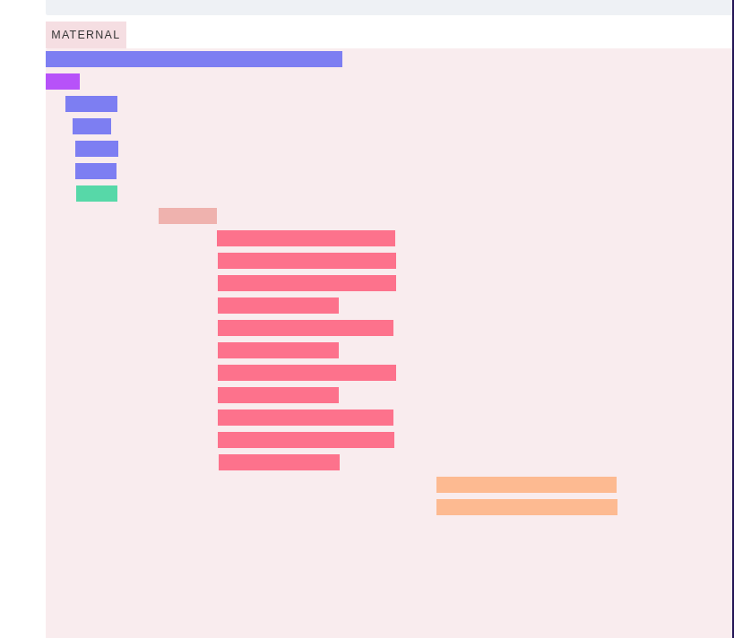
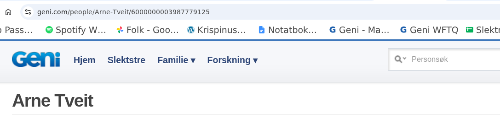
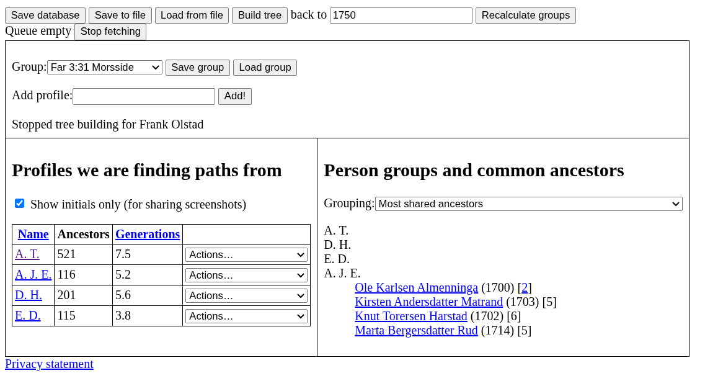

ACAC is a tool for figuring out all common ancestors for a group of people. This only makes sense if the people are known to be related, such as matching DNA on a specific segment.

The next step is to find the entries in geni.com corresponding to those matches. This may involve searching, or even finding an ancestor somewhere in the tree and entering the tree from MyHeritage down to the match. In the end you have a profile, and the profile has an URL, as seen in the top of the image below.

Now go to ACAC and create a group using the "New group" function in the pulldown. The name should be something you associate with the group somehow, for instance "Harald chr 3 pos 31 mother's side".
Then copy the URL found above into the "Add profile" field. ACAC will then (after asking permission) search Geni for the ancestors of that profile. And if we're lucky, we'll end up with a display like this:

This means that all the people entered descend from those parents, and one of them (we don't know which) is likely the ancestor for that particular segment. All the links open the profile in a new window.
Hit the "save database" button to save your work so far in the browser, or use "save to file" to save the database to a file. Filenames are automatically generated.
You can also use "Save group" to save the information gathered for this group to a file too.
Enjoy!